DIM + PRM 论文风格复现实验图
以下结果已经切换为 PNG，并尽量靠近论文中的绘制方式与版式风格。
图 3-5 诱饵因子对 DIM 机制的影响
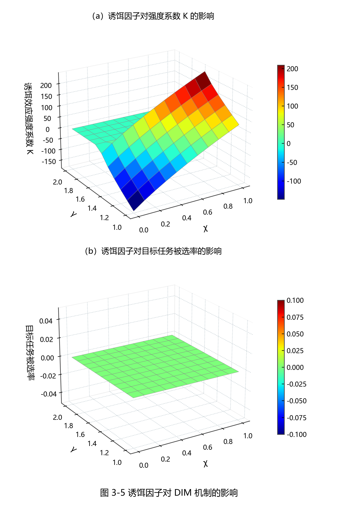
图 3-6 加入机制前后任务参与强度比较
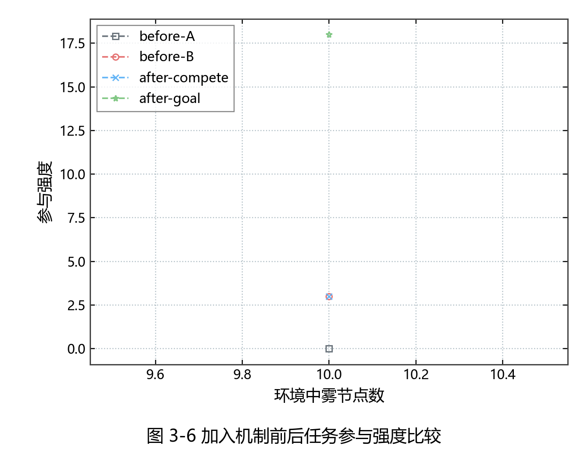
图 3-7 不同时间成本区间下任务卸载成功率比较
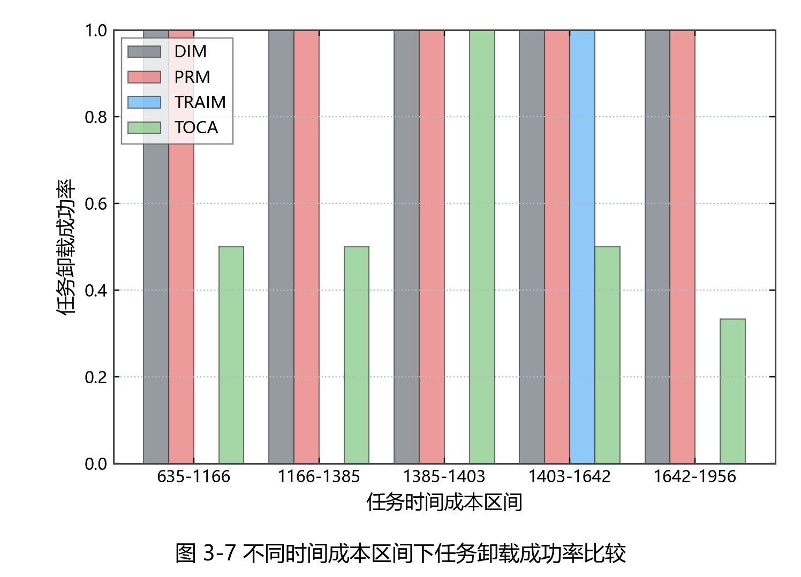
图 3-8 诱饵效应不同策略的比较
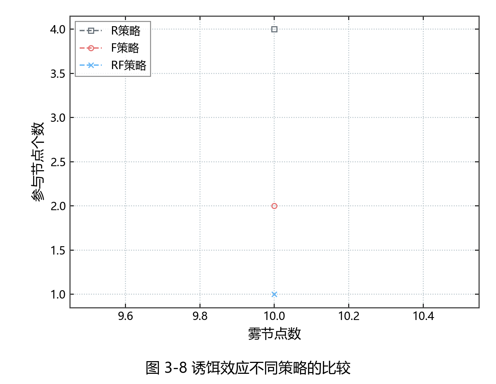
图 4-2 DIM、PRM、TRAIM 与 TOCA 有效参与强度
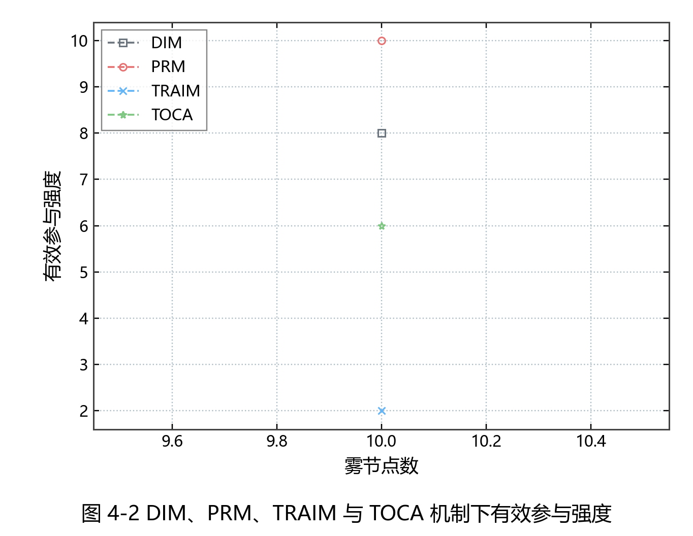
图 4-3 DIM 机制下偏好系数影响
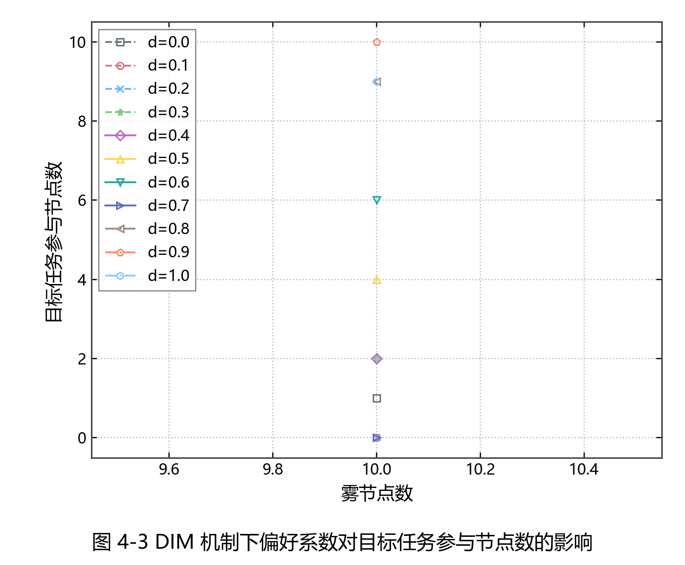
图 4-4 PRM 机制下偏好系数影响
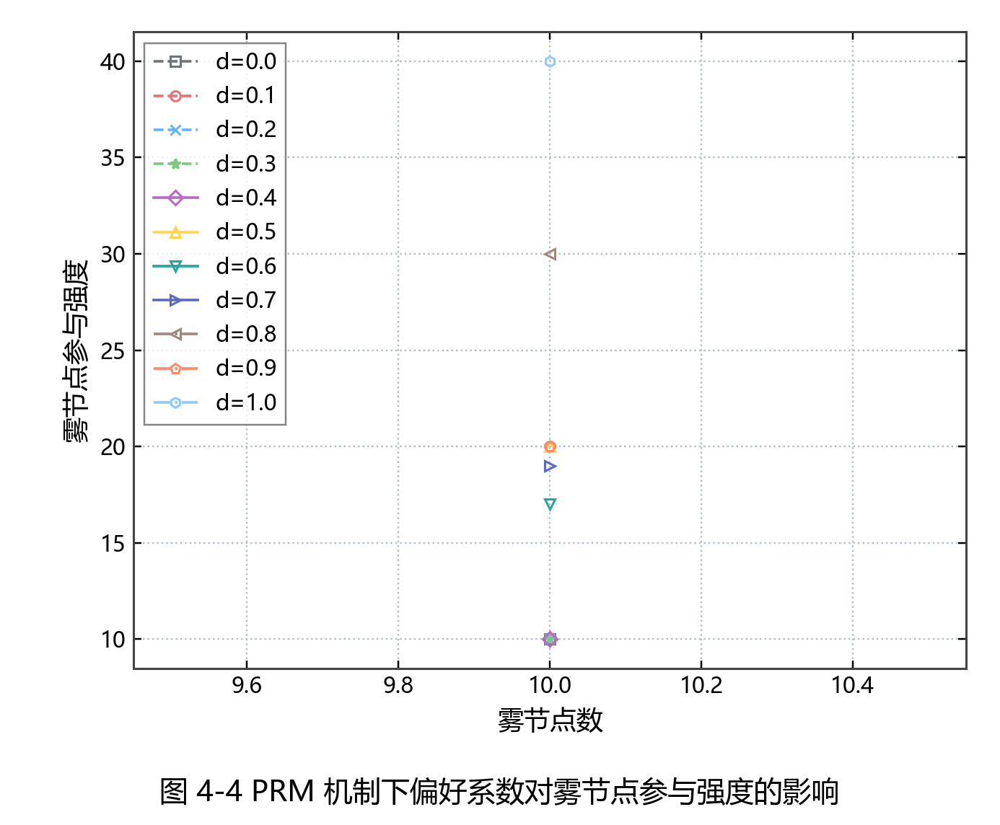
图 4-5 DIM、PRM 与 TRAIM 卸载成功任务数比较
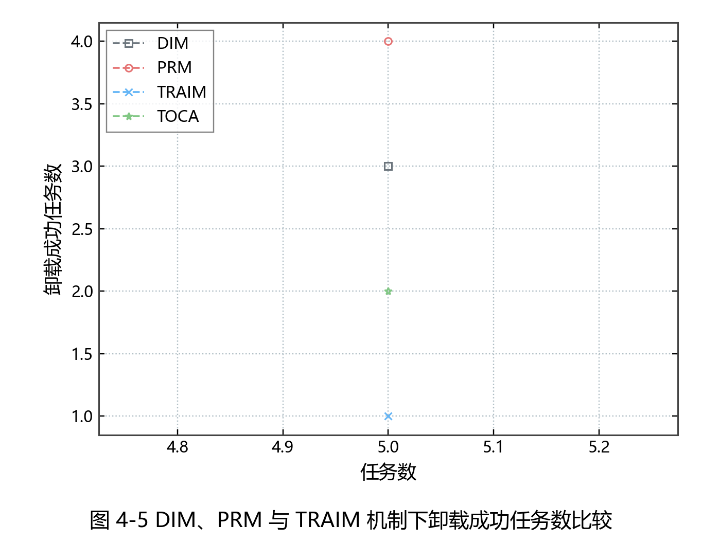
图 4-6 DIM、PRM 与 TRAIM 机制级统计对比
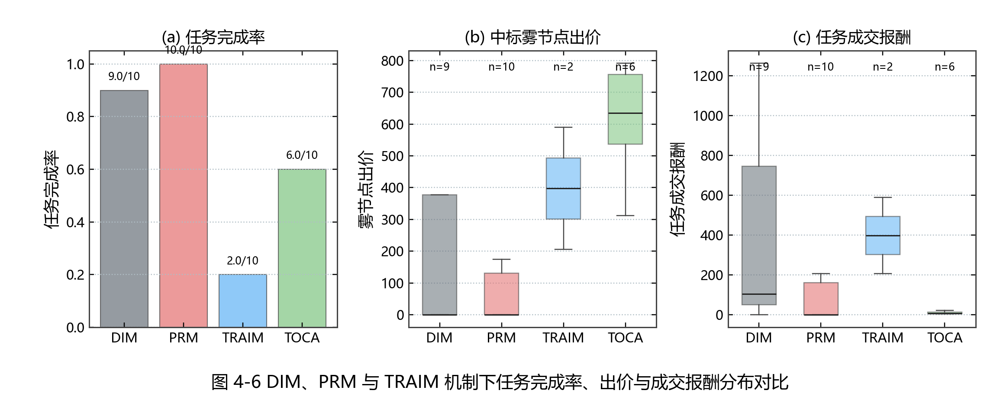
图 4-7 DIM、PRM 与 TRAIM 任务级成交热力图
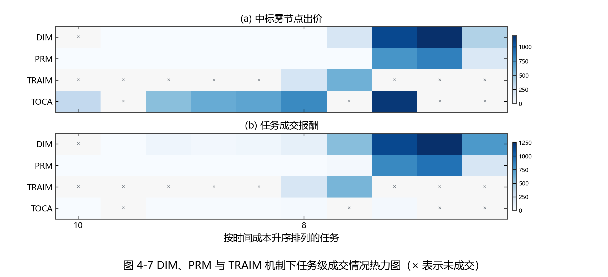
图 4-8 任务数为 25 的用户总效用
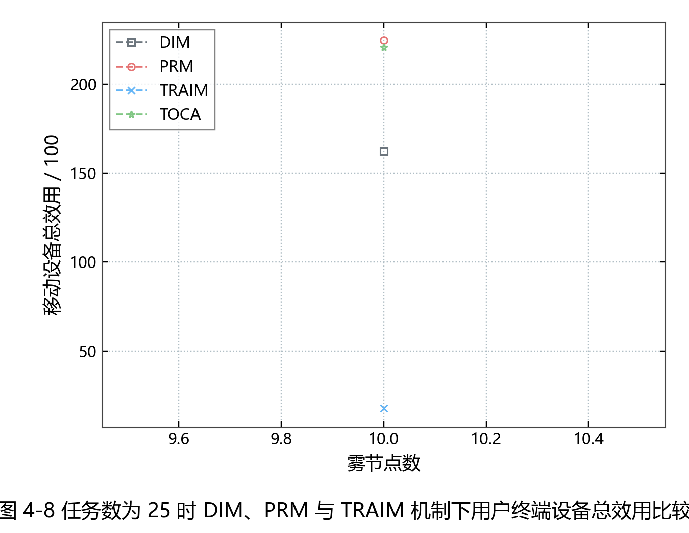
Truthfulness bid-scan audit
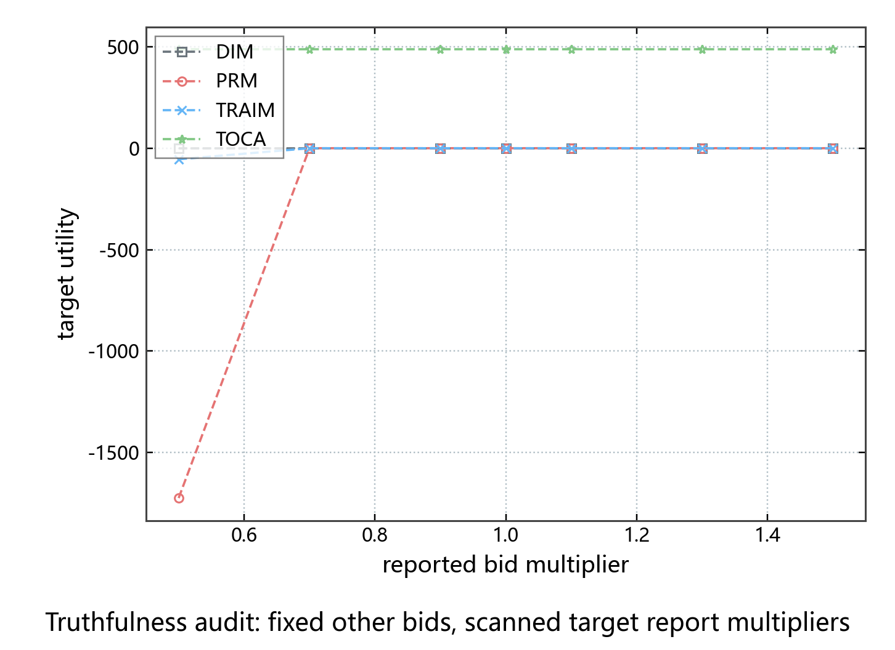